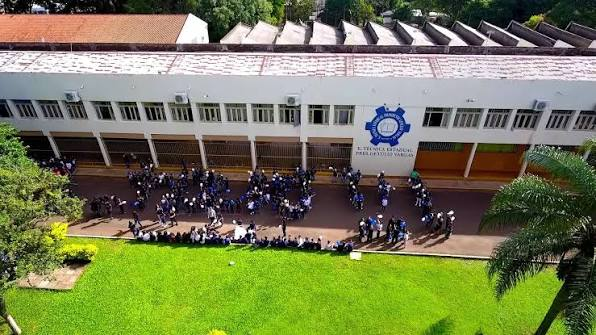

ETE Presidente Getúlio Vargas
Santo Ângelo - RS
Santo Ângelo - RS

A Escola Técnica Estadual Presidente Getúlio Vargas, situada na Avenida Getúlio Vargas, 1116, Centro, Santo Ângelo - RS, é uma instituição pública estadual que oferece desde o Ensino Fundamental até o Ensino Médio integrado ao técnico. Reconhecida pela qualidade, a escola conta com infraestrutura de ponta e um corpo docente dedicado.
Missão: Formar cidadãos críticos e profissionais qualificados, capazes de transformar a realidade social e econômica da região, com base em princípios éticos e sustentáveis.
A escola também oferece Atendimento Educacional Especializado (AEE) e possui uma estrutura pensada para inclusão e bem-estar de todos os alunos.